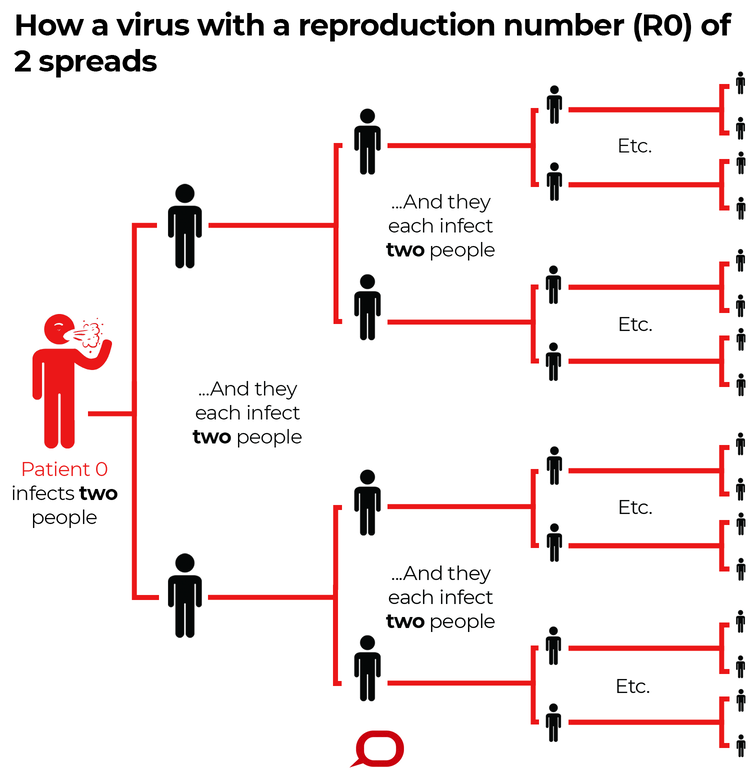

Introduction
As governments around the world implement different ways to counter the virus, most citizens do not fully understand the reasons behind government actions or unsure of whether their actions are reliable or not. COVID-19 Trend allows you to make predictions on future pandemic based on the restrictions you choose. Of course, there are other factors that can affect the outcomes:- Date in which the restrictions take place
Different dates have different numbers of active cases and daily increases in the last few days etc. Thus, the date could mean how serious the infection is. - Specific location
Different places can have different numbers as well. For example, Victoria currently has more cases and daily increases than any other states in the country. - Duration of restrictions
It’s obvious that the longer the duration of restrictions stay in place, the safer everyone is. However, these measurements cannot last forever as the country needs to keep the economy running and people need to work to make a living. So, balancing the safety and economy is very important. If the restrictions do not last long enough, the number of cases can bounce back and ruin the previous measurements that everyone worked hard for.
Brief Guides On Prediction Formula
The R0
The reproductive rate of the virus, or R0, measures the average number of secondary infections caused by a single case. The R0 is a context specific measurement. While the R0 in mainland China is estimated to be 2.58, it is likely that public health measures imposed by China have led to a relatively low R0. The R0 may be higher in countries which do not implement strong public health measures, such as the case isolation and contact quarantine measures used in Australia. There has been a large variation in R0 calculated by different studies. The WHO initially estimated the R0 to be 1.4-2.5 (average 1.95), however a recent review of 12 studies estimated the basic R0 to be 3.28 and the median R0 to be 2.79. Another measure of infectiousness is household secondary attack rate, or the proportion of household members who are likely to get infected from a case. Estimates of this rate have varied significantly between studies, ranging from as low as 3-10% to as high as 100%. This suggests that there may be factors that vary considerably between different groups, such as types of activities, duration of event, ventilation of the household and viral shedding of the case. The Department has released guidance on home isolation which outlines steps household members should take if there is a suspected or confirmed case in the house.
Social Distancing
COVID-19 spreads mainly among people who are in close contact (within about 6 feet) for a prolonged period. Spread happens when an infected person coughs, sneezes, or talks, and droplets from their mouth or nose are launched into the air and land in the mouths or noses of people nearby. The droplets can also be inhaled into the lungs. Recent studies indicate that people who are infected but do not have symptoms likely also play a role in the spread of COVID-19. Since people can spread the virus before they know they are sick, it is important to stay at least 6 feet away from others when possible, even if you—or they—do not have any symptoms. Social distancing is especially important for people who are at higher risk for severe illness from COVID-19.
Face Masks
With Victoria's coronavirus case count remaining worryingly high, Premier Daniel Andrews and Chief Health Officer Brett Sutton have advised residents in lockdown areas to wear masks when physical distancing may not be possible outside the home.
"Studies have recently shown that, even when factoring in imperfections and human error, wearing face masks can reduce transmission of coronavirus by around 60 per cent," reads a press release outlining the advice, which is unprecedented in Australia.
"The N95 respirators are much better but the surgical masks and even a 12-layered cloth mask does give you good protection as well," said Professor MacIntrye, the head of the biosecurity research program at the Kirby Institute, before adding that masks protected with equal effect people in the community as well as in a healthcare setting.
Lockdown
Viruses have varying abilities to infect people. For COVID-19, each person with the virus can go on to infect around 2.5 people. If each of those people go about their day as normal, and infect another 2.5 people, within a month, 406 people would be infected just from that first infection.
In the absence of treatment or a vaccine, ceasing most human contact is really the only way to stop the spread of the virus. Essentially, the less contact people have with each other, the less the virus can spread. Given the rapid spread of the virus, social lockdown is urgent to bring overall transmission down, and see whether testing followed by isolation could be effective – this is all in an attempt to ‘flatten the curve’ or reduce infections and spread cases out over a longer time frame to avoid overwhelming health systems.
Since the new coronavirus can spread unnoticed so easily, many governments have felt the best way to ensure people have minimal contact with each other is to order total lockdowns, with people only being allowed to leave to get food or medicine, and to practise social distancing when they do leave their houses. Countries that had epidemics first, such as China and South Korea, have brought cases down dramatically through widespread testing and social distancing.
Back to Trend Forecast